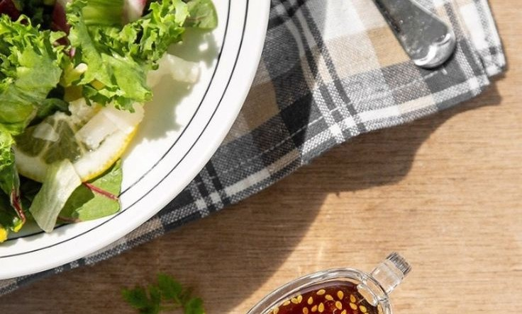

-

oriental salad 채식주의자
런던에서의 5주 코스
5주간 채식 주의자 음식에 대해 소개하고 쌀과 국수 요리를 가르친다.
-
teriyaki 소스 마스터클래스
1일 워크샵
1일 집중 코스에서는 다양한 요리에 사용할 수 있는 가장 맛있는 소스를 만드는 방법을 살펴본다.
kim's kitchen
cooking class
cooking class
5주간 채식 주의자 음식에 대해 소개하고 쌀과 국수 요리를 가르친다.
1일 집중 코스에서는 다양한 요리에 사용할 수 있는 가장 맛있는 소스를 만드는 방법을 살펴본다.